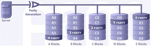

네트워크관리사-2급 (2014-04-27 기출문제)
1과목: TCP/IP
1. TCP와 UDP의 차이점을 설명한 것 중 옳지 않은 것은?
- TCP는 전 이중방식 스트림 중심의 연결형 프로토콜이고, UDP는 비 연결형 프로토콜이다.
- TCP는 전달된 패킷에 대한 수신측의 인증이 필요하지만 UDP는 그렇지 않다.
- 일반적으로 동영상과 같은 실시간 데이터 전송에는 UDP가 사용된다.
- UDP는 TCP에 비해 오버헤드가 크다.
(정답률: 88%)

2. IGMP(Internet Group Management Protocol)에 대한 설명으로 올바른 것은?
- 대칭 프로토콜이다.
- TTL(Time to Live)이 제공되지 않는다.
- 데이터의 멀티 캐스팅을 위해 개발된 프로토콜이다.
- 최초의 리포트를 잃어버린 후 ICMP를 갱신하지 않는다.
(정답률: 85%)
3. ipconfig는 TCP/IP 설정을 확인하는 유틸리티이다. 다음 중 이 유틸리티를 사용하여 확인할 수 있는 정보로 옳지 않은 것은?(단, ipconfig의 /all과 같은 파라미터는 사용하지 않는다.)
- IP Address
- DNS 서버
- 서브넷 마스크(Subnet Mask)
- 기본 게이트웨이(Default Gateway)
(정답률: 82%)
4. IPv4 Address 중 네트워크 ID가 '127'로 시작하는 주소의 용도는?
- 제한적 브로드캐스트 주소
- B Class의 멀티캐스트 주소
- C Class의 사설(Private) IP 주소
- 루프백(Loopback) 주소
(정답률: 86%)
5. Class가 다른 IP Address는?
- 223.235.47.35
- 224.128.1⑤.4
- 225.114.58.5
- 226.204.26.34
(정답률: 77%)
6. SSH(Secure Shell) 프로토콜에 들어가지 않는 기능은?
- 압축(Compression)
- 암호화(Encryption)
- 인증(Authentication)
- 순서보정(Resequencing)
(정답률: 80%)
7. 라우트(Route) 프로토콜은 라우팅(Routing) 프로토콜과 라우티드(Routed)로 구분할 수 있다. 라우팅(Routing) 프로토콜이 아닌 것은?
- IGRP
- TCP/IP
- RIP
- OSPF
(정답률: 72%)
8. ICMPv6에서 IPv4의 ARP 역할 및 특정 호스트로의 전달 가능 여부 검사 기능을 하는 메시지는?
- 재지정 메시지(Redirection)
- 에코 요청 메시지(Echo request)
- 이웃 요청과 광고 메시지(Neighbor Solicitation and Advertisement)
- 목적지 도달 불가 메시지(Destination unreachable)
(정답률: 70%)
9. IPv6에 대한 설명으로 옳지 않은 것은?
- IPv6 Address는 128bit의 길이로 되어 있다.
- 현재의 IPv4와도 상호 운용이 가능하다.
- 낮은 전송속도를 가지는 네트워크에서는 문제가 있지만, ATM같은 높은 효율성을 가진 네트워크에서도 잘 동작된다.
- IPv6 어드레스는 각각의 인터페이스와 인터페이스 집합을 정의해준다.
(정답률: 79%)
10. IPv6의 주소 표기법으로 올바른 것은?
- 192.168.1.30
- 3ffe:1900:4545:0003:0200:f8ff:ffff:11⑤
- 00:A0:C3:4B:21:33
- 0000:002A:0080:c703:3c75
(정답률: 79%)
11. TCP의 프로토콜 이름과 일반 사용(Well-Known) 포트 연결로 옳지 않은 것은?
- SMTP : 25
- HTTP : 80
- POP3 : 100
- FTP-Data : 20
(정답률: 82%)
12. 라우팅 테이블에 포함되어 있는 정보로 옳지 않은 것은?
- 송신지 IP Address
- 다음-홉(Hop) 라우터
- 목적지 IP Address
- 인터페이스
(정답률: 51%)
13. DNS에서 사용될 때 TTL(Time to Live)의 설명으로 올바른 것은?
- 데이터가 DNS서버 존으로부터 나오기 전에 현재 남은 시간이다.
- 데이터가 DNS서버 캐시로부터 나오기 전에 현재 남은 시간이다.
- 패킷이 DNS서버 존으로부터 나오기 전에 현재 남은 시간이다.
- 패킷이 DNS서버 네임서버 레코드로부터 나오기 전에 현재 남은 시간이다.
(정답률: 78%)
14. 서브넷 마스크에 대한 설명으로 옳지 않은 것은?
- 서브네팅이란 주어진 IP 주소 범위를 필요에 따라서 여러 개의 서브넷으로 분리하는 작업이다.
- 서브넷 마스크를 이용하여 목적지 호스트가 동일한 네트워크상에 있는지 확인한다.
- 필요한 서브넷의 수를 고려하여 서브넷 마스크 값을 결정한다.
- 서브넷 마스크는 Network ID 필드는 '0'으로, Host ID 필드는 '1'로 채운다.
(정답률: 87%)
15. TCP/IP 에서 데이터 링크층의 데이터 단위는?
- 메시지
- 세그먼트
- 데이터그램
- 프레임
(정답률: 78%)
16. C Class 네트워크에서 6개의 서브넷이 필요하다고 할 때 가장 적당한 서브넷 마스크는?
- 255.255.255.0
- 255.255.255.192
- 255.255.255.224
- 255.255.255.240
(정답률: 67%)
17. TCP/IP 프로토콜 계층 구조에서 볼 때, 응용 계층에서 동작하는 프로토콜로 옳지 않은 것은?
- ICMP
- SMTP
- SNMP
- TFTP
(정답률: 64%)
2과목: 네트워크 일반
18. 100Mbps 이상의 전송속도를 제공하는 무선 LAN의 표준은?
- IEEE 802.11a
- IEEE 802.11b
- IEEE 802.11g
- IEEE 802.11n
(정답률: 71%)
19. 하나의 회선을 여러 사용자들이 동시에 채널을 나누어 사용할 수 있도록 하는 방법은?
- 엔코딩
- 멀티 플렉싱
- 디코딩
- 흐름 제어
(정답률: 91%)
20. 10Base-5의 전송 속도는?
- 10Mbps
- 5Mbps
- 2Mbps
- 100Mbps
(정답률: 79%)
21. OSI 7 Layer의 계층을 순서대로 나열한 것은?
- 물리 계층 - 데이터링크 계층 - 네트워크 계층 - 전송 계층 - 프레젠테이션 계층 - 세션 계층 - 응용 계층
- 물리 계층 - 데이터링크 계층 - 네트워크 계층 - 프레젠테이션 계층 - 세션 계층 - 전송 계층 - 응용 계층
- 물리 계층 - 데이터링크 계층 - 네트워크 계층 - 전송 계층 - 세션 계층 - 프레젠테이션 계층 - 응용 계층
- 물리 계층 - 데이터링크 계층 - 네트워크 계층 - 전송 계층 - 세션 계층 - 응용 계층 - 프레젠테이션 계층
(정답률: 82%)
22. 오류 검출 방식인 ARQ 방식 중에서 일정한 크기 단위로 연속해서 프레임을 전송하고 수신측에 오류가 발견된 프레임에 대하여 재전송 요청이 있을 경우 잘못된 프레임만을 다시 전송하는 방법은?
- Stop-and-Wait ARQ
- Go-back-N ARQ
- Selective-repeat ARQ
- Adaptive ARQ
(정답률: 76%)
23. Analog 데이터를 Digital 신호로 변환하는 과정으로 올바른 것은?
- Analog → 양자화 → 표본화 → 부호화 → Digital
- Analog → 표본화 → 양자화 → 부호화 → Digital
- Analog → 표본화 → 부호화 → 양자화 → Digital
- Analog → 양자화 → 부호화 → 표본화 → Digital
(정답률: 88%)
24. 데이터 흐름 제어(Flow Control)와 관련 없는 것은?
- Stop and Wait
- XON/OFF
- Loop/Echo
- Sliding Window
(정답률: 74%)
25. LAN의 구성형태 중 중앙의 제어점으로부터 모든 기기가 점 대 점(Point to Point) 방식으로 연결된 구성형태는?
- 링형 구성
- 스타형 구성
- 버스형 구성
- 트리형 구성
(정답률: 86%)
26. 인터넷 프로토콜들 중 OSI 참조 모델의 네트워크 계층에 속하지 않는 프로토콜은?
- IP
- ICMP
- UDP
- ARP
(정답률: 76%)
27. IEEE 802 표준에 대한 연결이 잘못 이루어진 것은?
- IEEE 802.2 - LLC
- IEEE 802.3 - LDAP
- IEEE 802.4 - 토큰 버스
- IEEE 802.5 - 토큰 링
(정답률: 78%)
3과목: NOS
28. Windows 2003 Server의 파일 및 프린터 공유에 관한 설명으로 옳지 않은 것은?
- 드라이브 공유 시에 접속할 수 있는 최대 사용자 수를 제한할 수 있다.
- 공유된 드라이브나 디렉터리에는 손모양의 아이콘이 나타난다.
- 디스크 드라이브 뿐만 아니라, 특정 디렉터리만 공유시킬 수도 있다.
- 공유 프린터는 반드시 기본 프린터로 설정되어 있어야 한다.
(정답률: 81%)
29. Linux에서 사용자가 현재 작업 중인 디렉터리의 경로를 절대경로 방식으로 보여주는 명령어는?
- cd
- man
- pwd
- cron
(정답률: 78%)
30. Windows 2003 Server의 IIS에서 이용 가능한 서비스로 옳지 않은 것은?
- DHCP 서비스
- NNTP 서비스
- FTP 서비스
- SMTP 서비스
(정답률: 55%)
31. 현재 디렉터리와 하부 디렉터리까지 검색하여 core라는 파일을 찾아 삭제하는 Linux 명령으로 올바른 것은?
- find. -name core -exec rm -rf {} \;
- find / -name core -exe rm -rf {} \;
- find. -name core -print | rm -rf {} \;
- find / -name core | rm -rf
(정답률: 54%)
32. Windows 2003 Server의 Active Directory 특성으로 올바른 것은?
- DNS와 독립적으로 동작한다.
- LDAP를 사용하는 다른 디렉터리 서비스와 호환되지 않는다.
- 그룹 정책을 기반으로 GPO에 해당 그룹 사용자가 가지고 있는 권한이 명시되어 있다.
- 글로벌 카탈로그는 자기 도메인 내의 모든 정보를 가지고 있다.
(정답률: 62%)
33. Windows 2003 Server의 NTFS에서 제공하는 기능으로 옳지 않은 것은?
- 파일과 폴더 차원의 보안 : NTFS는 파일과 폴더에 대한 접근을 제어한다.
- 디스크 압축 : NTFS 압축 파일로 더 많은 저장 공간을 만들 수 있다.
- 듀얼 부팅 설정 : Windows XP과 Windows 2003 Server 사이에 듀얼 부트를 구성할 경우, 원활한 파일 공유를 위해 시스템 파티션의 파일 시스템은 NTFS로만 구성해야 한다.
- 파일 암호화 : NTFS는 파일에 대한 암호화를 지원한다.
(정답률: 72%)
34. SOA 레코드의 설정 값에 대한 설명으로 옳지 않은 것은?
- 주 서버 : 주 영역 서버의 도메인 주소를 입력한다.
- 책임자 : 책임자의 주소 및 전화번호를 입력한다
- 최소 TTL : 각 레코드의 기본 Cache 시간을 지정한다.
- 새로 고침 간격 : 주 서버와 보조 서버간의 통신이 두절되었을 때 다시 통신할 시간 간격을 설정한다.
(정답률: 79%)
35. E-Mail에서 주로 사용하는 프로토콜로 옳지 않은 것은?
- SMTP
- POP3
- IMAP
- SNMP
(정답률: 77%)
36. 아래 화면과 같이 패리티(Parity)가 있는 RAID 방식은?

- RAID 0
- RAID 1
- RAID 2
- RAID 5
(정답률: 72%)
37. Windows 2003 Server에서 DHCP에 대한 설명 중 옳지 않은 것은?
- 클라이언트가 DHCP 서버에 접속하면 자동으로 게이트웨이 주소를 할당한다.
- 클라이언트가 DHCP 서버에 접속하면 자동으로 DNS 주소를 할당한다.
- DHCP 서버에 접속하면 자동으로 IP Address를 할당한다.
- DHCP 서버에 접속하면 자동으로 컴퓨터 이름을 할당한다.
(정답률: 69%)
38. Linux에서 사용자에 대한 패스워드의 만료기간 및 시간 정보를 변경하는 명령어는?
- chage
- chgrp
- chmod
- usermod
(정답률: 67%)
39. Linux에서 현재 사용 디렉터리 위치에 상관없이 자신의 HOME Directory로 이동하는 명령은?
- cd HOME
- cd /
- cd ../HOME
- cd ~
(정답률: 69%)
40. Linux에서 파티션 Type이 'SWAP' 일 경우의 의미는?
- Linux가 실제로 자료를 저장하는데 사용되는 파티션이다.
- Linux가 네트워킹 상태에서 쿠키를 저장하기 위한 파티션이다.
- 메모리가 부족할 경우 하드 디스크의 일부분을 마치 메모리인 것처럼 사용하는 파티션이다.
- Utility 프로그램을 저장하는데 사용되는 파티션이다.
(정답률: 84%)
41. Linux에서 'manager'라는 파일을, 파일의 소유자가 아닌 사람도 볼 수는 있지만 수정을 못하도록 하는 명령어는?
- chmod 777 manager
- chmod 666 manager
- chmod 646 manager
- chmod 644 manager
(정답률: 72%)
42. Linux 시스템에서 RPM 패키지 설치시 기존 파일에 강제적으로 설치하고자 할 때 사용하는 옵션은?
- --nodeps
- --noreplacefiles
- --force
- --defaultpackage
(정답률: 69%)
43. Linux 시스템의 vi 에디터를 사용하여 텍스트를 입력한 후 저장하지 않았을 때, 바로 종료가 되지 않는 명령은?
- :wq
- :wq!
- :q!
- :q
(정답률: 64%)
44. Windows 2003 Server에서 보안로그 파일의 내용을 보거나 로그 파일 내에 특정 이벤트를 찾는데 사용하는 기능은?
- 이벤트 뷰어
- 감사 설정
- 프로세스 추적
- 시스템 이벤트
(정답률: 66%)
45. Windows 2003 Server에서 이미 사용 중인 도메인에 별칭 도메인을 하나 추가하려고 할 때 사용하는 Record는?
- A Record
- CNAME Record
- PTR Record
- MX Record
(정답률: 72%)
4과목: 네트워크 운용기기
46. 라우터의 설정 파일이 저장되는 곳은?
- NVRAM
- Shared RAM
- Main RAM
- ROM
(정답률: 72%)
47. 게이트웨이(Gateway)에 대한 설명으로 옳지 않은 것은?
- OSI 참조 모델의 Transprot 계층간을 연결하는 네트워크 장비이다.
- 두 개의 완전히 다른 네트워크 사이의 데이터 형식을 변환하는 장치이다.
- 데이터 변환의 기능을 가지고 있어 네트워크내의 병목 현상을 일으키는 지점이 될 수 있다.
- 프로토콜이 다른 네트워크 환경들을 연결할 수 있는 기능을 제공한다.
(정답률: 50%)
48. 현재 LAN 카드의 MAC Address는 몇 비트의 번호체계인가?
- 32 비트
- 48 비트
- 64 비트
- 128 비트
(정답률: 73%)
49. OSI 7계층 중에서 리피터가 지원하는 계층은?
- 물리계층
- 네트워크 계층
- 전송계층
- 응용계층
(정답률: 77%)
50. 무선랜의 구성 방식 중 무선랜 카드를 가진 컴퓨터 간의 네트워크를 구성하여 작동하는 방식은?
- Infrastructure
- Ad-Hoc
- Bridge
- CSMA/CD
(정답률: 72%)